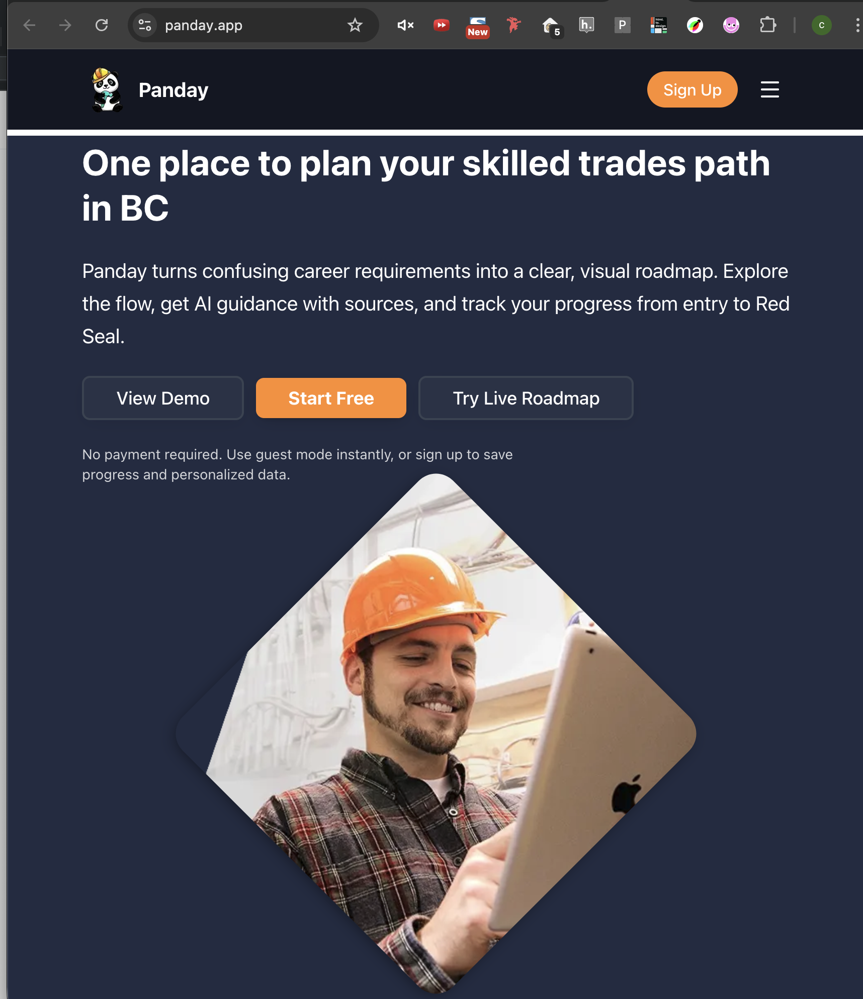

BCIT · Term Projects
Featured build: Panday, a roadmap-based web app that helps users plan skilled-trades pathways in British Columbia.
Panday
A Next.js product that combines visual career roadmaps, source-grounded AI guidance, and progress tracking in one place.
Next.js 15
React 19
TypeScript
Bun
PostgreSQL
Prisma
Clerk
React Flow
Tailwind CSS
Vitest

Landing page capture showing the core product message and trade-path onboarding.
How It Works
Panday turns a complex apprenticeship journey into a guided product flow that is easier to understand and act on.
Product Flow
From entry path to next milestone
- Choose a current level or entry path to personalize the roadmap immediately.
- Open roadmap nodes to see requirements, eligibility details, and next actions.
- Ask the AI assistant questions in context while viewing the roadmap.
- Review source-backed answers tied to official documents and guidance.
- Track checklist completion, notes, and saved progress over time.
- Return later and continue from the same point with history preserved.
Core Product Highlights
What makes the app useful
- Interactive visual roadmap: shows the full path from entry through apprenticeship milestones to Red Seal.
- Context-aware AI chat: answers questions while users stay inside the roadmap experience.
- Grounded responses: AI output is backed by official BC trades and government resources.
- Custom nodes: users can add reminders, notes, and checklist items near relevant milestones.
- Progress continuity: chat history, profile state, and completion tracking keep momentum between sessions.
Build Details
Tech stack, architecture, and the product systems behind the roadmap, AI assistance, and persistent user progress.
Frontend
Product UI and interaction layer
- Next.js 15 App Router with React 19 and TypeScript.
- React Flow renders the node-based roadmap canvas and custom milestone components.
- Tailwind CSS and shadcn/ui support the interface styling and reusable UI patterns.
- Landing pages, guided demo pages, chat panels, and roadmap views are organized as app routes and components.
Backend + Data
Persistence, auth, and AI support
- PostgreSQL with Prisma stores application data and user-linked state.
- Clerk handles authentication and user-scoped access control.
- Vercel AI SDK connects AI providers for chat experiences.
- Hybrid retrieval combines embeddings and structured content so answers can cite relevant source material.
- Vitest covers automated testing, while Zod validates inputs at API boundaries.
Architecture
Roadmap content + grounded AI workflow
User Browser
|
| Next.js routes (landing / demo / roadmap)
v
React UI + React Flow canvas
- roadmap nodes
- chat interface
- checklist and profile state
|
| API requests
v
Next.js route handlers
- chat
- threads
- profile
- faq / status
|
+-> Prisma + PostgreSQL
| - users, threads, progress data
|
+-> embeddings + structured roadmap content
| - source retrieval for grounded answers
|
+-> AI providers via Vercel AI SDK
- streamed responses with citations
Engineering Notes
Repo structure and operational details
- The repo separates roadmap content, node rendering, chat logic, and API handlers into focused folders.
- Bun is used for local workflows, development commands, and build scripts.
- Prisma migrations and generated clients support database schema changes and runtime access.
- Health diagnostics and rate limiting help protect key services and external API usage.
- Supporting docs cover roadmap generation, auto-layout, and local setup.
My Role (Key Contributions)
AI-related product features and supporting systems
- Source-grounded AI chat: helped shape a chat experience that answers user questions in context while grounding responses in official trades and government resources instead of generic free-form output.
- RAG pipeline design: supported an architecture where user queries are matched against roadmap content through embeddings retrieval, then injected into the AI prompt so answers can stay relevant to the selected roadmap and node content.
- Embeddings system: the project includes a hybrid embeddings backend with JSON and Postgres/pgvector support, allowing semantic search over roadmap documents and better scaling as content grows.
- Personalized AI context: user profile data such as current level can be injected into the system prompt so the assistant responds with guidance that better matches the user's stage in the apprenticeship journey.
- Source citations and previews: AI responses can surface filtered sources, hover previews, excerpts, and direct roadmap links so users can inspect where guidance came from.
- Streaming multi-provider AI setup: the app uses the Vercel AI SDK with multiple providers and streams responses back into the UI, making the chat feel faster and more product-like.
- Persistent AI conversations: chat threads, messages, previews, and saved citations are persisted so users can return to earlier AI conversations instead of losing the interaction after one session.
- FAQ generation pipeline: past AI chat sessions can be processed into extracted Q&A pairs, clustered semantically, and consolidated into reusable FAQ content for future users.
- AI reliability safeguards: rate limiting, input validation, request timeouts, and user-scoped access control help keep the AI features safer, more stable, and less noisy in production.